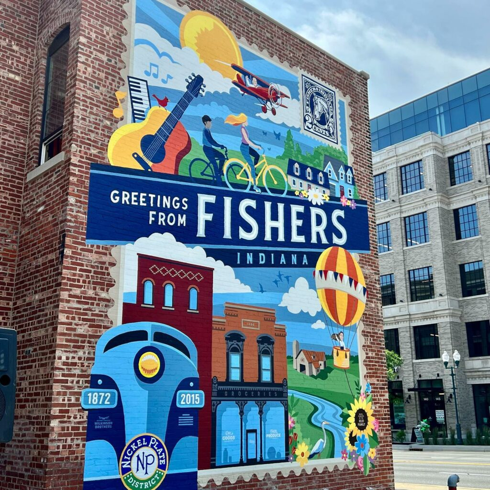
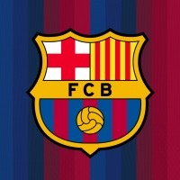

Fishers, Indiana
I was born and raised in Fishers Indiana. It is a great town with many good resteraunts like CR Hero's and Chipotle. The community is great and there are 2 rival highschools, Fishers and HSE.

Favorite Sports Team
My favorite sports team is FC Barcelona. FC Barcelona is a soccer team that compeetes in the LaLiga- the highest league in all of spain. I have been following them since I was 12 and have seen them at their lowest lows and highest highs. They have won numerous trophies like the Champions League and the LaLiga Title.

Favorite Meal
My favorite meal is tacos! Tacos are amazing because of the customizable nature of them. You can put any toppings, and meat, and any sauce you like. They can be savory or spicy. They can be small or big. They are yours to choose. Another reason I really like them is beacause they CANNOT taste bad. I have never had a bad taco and I'll bet you haven't either.

Favorite Season
My favorite season is Fall/Winter. These are my favorite seasons because of the beautiful scenes and feelings you get. The best holidays like Christmas, Halloween, and Thanksgiving happen during this time. The smells, the scenes, the movies, the decorations, and the weather are all amazing.
My Connection With My Hometown
When you spend so much time in one place, it begins to feel like home. I've lived in Fishers for 14 years and it is my one and only home. I know every inch of the town like the back of my hand. I know all of the best restearunts, parks, and hangout spots. I have become so connected with my community and love every part about this city.
Layout by Bootstrap